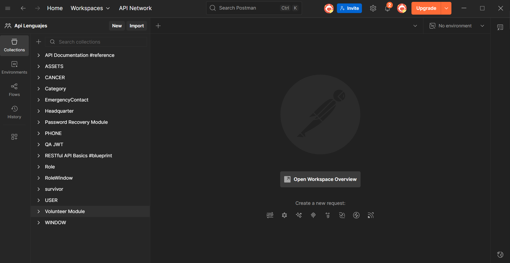
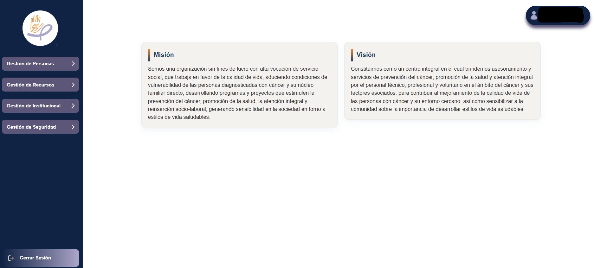
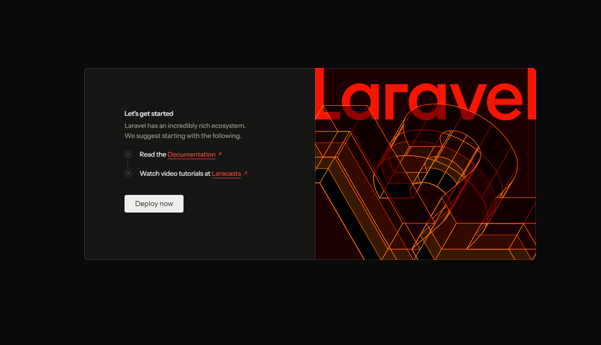
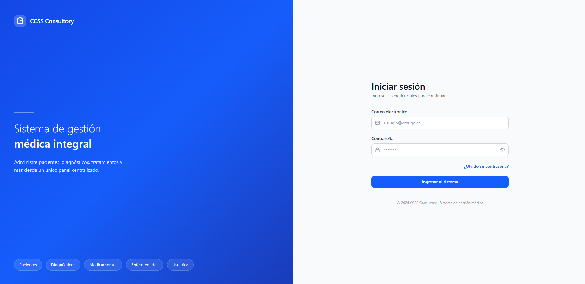

Portfolio
Explore a selection of my web development projects. From Full Stack applications to backend and frontend specialized solutions, each project reflects my commitment to quality and technological innovation.
- All
- Web Apps
- Backend
- Frontend
- Full Stack
- Playground

Backend FUNCAVIDA
Robust backend developed for the management system of FUNCAVIDA, a non-governmental organization dedicated to the comprehensive support of cancer survivors in Costa Rica.

Frontend FUNCAVIDA
Robust frontend developed for the management system of FUNCAVIDA, a non-governmental organization dedicated to the comprehensive support of cancer survivors in Costa Rica.

Backend IntelliVerse
Multiplatform artificial intelligence platform that integrates multiple AI models (Gemini, Groq, Mistral, HuggingFace) to offer a suite of intelligent applications: personalized diet tracker, one-click travel planner, text style translator, educational assistant, and decision-making system.

Delicias Fortuneñas Page
Modern and responsive web application developed with React for Delicias Fortuneñas, an artisanal bakery specialized in artisanal breads, cakes, and traditional pastry products. The application features an interactive product catalog, information about the bakery, location via interactive map, and contact form.

Minesweeper with React
Reimplementation of the iconic Minesweeper game using React with modern hooks and Redux Toolkit for state management. Includes multiple difficulty levels, real-time timer, remaining mines counter, flag system, and automatic detection of victory or defeat.

Gemelas Villalobos Page
Modern and responsive web application developed with React for Gemelas Villalobos, a custom embroidery and tailoring business. The application features a portfolio gallery showcasing their products, a detailed services section, an embedded location map, contact information with schedule, and an interactive FAQ section.

Backend CCSS Consultory
Practice project developed as the final assessment of an onboarding process. REST API for managing a CCSS medical consultory, covering patients, doctors, diagnoses, illnesses, and treatments.

Frontend CCSS Consultory
Practice project developed as part of a frontend induction program. Medical consultation management system for the CCSS, featuring an intelligent triage queue that auto-prioritizes patients by disease severity.

Mobile Test Automation Suite
End-to-end mobile test automation suite built with Appium and pytest for a Flutter task management app, applying the Page Object Model pattern and covering 12 automated test scenarios.